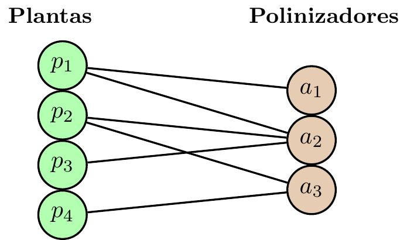

4 Sesión 4: Métricas globales de red: Conectancia, anidamiento, \(H_2'\) y modularidad
4.1 Temas
- Repaso: red bipartita, matriz de interacción, caminos y centralidades vistas.
- Conectancia: fracción de interacciones potenciales que se observan.
- Anidamiento: especialistas como subconjuntos de generalistas; índice \(\mathrm{NODF}\).
- Especialización cuantitativa: significado e interpretación de \(H_2'\).
- Modularidad: bloques o módulos de interacción preferente.
Tip
Hasta ahora describimos especies individuales; ahora buscamos describir la arquitectura de la red completa.
4.2 Red bipartita y matriz de interacción
Una red bipartita separa las especies en dos clases, por ejemplo plantas y polinizadores. La información puede codificarse como una matriz
\[ B\in \mathbb{R}_{\ge 0}^{p\times q}, \]
con \(B_{ij}=0\) si no hay interacción y \(B_{ij}>0\) si la interacción se observa.
\[ \begin{array}{c|ccc} & a_1 & a_2 & a_3 \\ \hline p_1& 1 & 1 & 0\\ p_2& 0 & 1 & 1\\ p_3& 0 & 1 & 0\\ p_4& 0 & 0 & 1 \end{array} \]
Tip
En redes binarias, la matriz registra presencia/ausencia. En redes ponderadas, \(B_{ij}\) puede representar frecuencia, biomasa o número de eventos.
4.3 Caminos, distancias y conectividad
Camino: sucesión de vértices \(v_0,v_1,\dots,v_k\) tal que cada par consecutivo está unido por una arista.
Distancia geodésica: \[ d(u,v)=\min\{k:\text{existe un camino de longitud }k\text{ entre }u\text{ y }v\}. \]
NotaConectividad
Un grafo es conexo si todo par de vértices puede unirse por un camino. Si no lo es, se descompone en componentes conexas.
- La cercanía usa sumas de distancias al resto de la red.
- La intermediación cuenta cuántas geodésicas pasan por un nodo.
- Estas ideas reaparecen al distinguir entre una red densa, anidada o modular.
4.4 Medidas de centralidad
| Métrica | Definición típica | Lectura ecológica |
|---|---|---|
| Grado \(C_D(v)\) | \(\deg(v)\) | Número de vecinos directos; generalismo o especialización local. |
| Cercanía \(C_C(v)\) | Inverso de la distancia total al resto | Accesibilidad global; rapidez potencial de propagación. |
| Intermediación \(C_B(v)\) | Fracción de geodésicas que pasan por \(v\) | Rol de puente; conexión entre grupos o rutas cortas. |
Nota
Estas medidas son locales: asignan un valor a cada especie. Lo que sigue son medidas globales: asignan un valor a la red completa.
5 Métricas globales
5.1 Aspectos sobre la red…
| Métrica | Pregunta estructural |
|---|---|
| Conectancia \(\mathcal{C}\) | ¿Qué fracción de las interacciones posibles está presente? |
| Anidamiento \(\mathrm{NODF}\) | ¿Los socios de las especies especialistas son subconjuntos de los de las generalistas? |
| Especialización \(H_2'\) | En una red ponderada, ¿qué tan concentradas o selectivas son las interacciones, una vez considerados los marginales? |
| Modularidad \(Q_B\) | ¿Existen grupos con interacción preferente hacia adentro del mismo módulo? |
Nota
Dos redes pueden tener la misma conectancia y, aun así, una ser anidada y la otra modular. Por eso ninguna métrica por sí sola agota la estructura de la red.
5.2 Conectancia
Mide la proporción de interacciones potenciales que sí aparecen en la red.
NotaDefinición
Para una matriz binaria \(B\in\{0,1\}^{p\times q}\), la conectancia es \[ \mathcal{C} = \frac{|E|}{p\,q}=\frac{1}{p\,q}\sum_{i=1}^{p}\sum_{j=1}^{q} B_{ij}\in[0,1]. \]
- \(\mathcal{C}=1\): todas las interacciones posibles están presentes.
- \(\mathcal{C}\) cercana a 0: la red es muy dispersa.
- En redes ponderadas, la conectancia suele calcularse sobre la versión binarizada de la matriz.
Tip
La conectancia captura la densidad de enlaces de la red bipartita.
5.3 Ejemplo de conectancia
Para la matriz \[ \begin{array}{c|ccc} & a_1 & a_2 & a_3 \\ \hline p_1& 1 & 1 & 0\\ p_2& 0 & 1 & 1\\ p_3& 0 & 1 & 0\\ p_4& 0 & 0 & 1 \end{array} \] se tiene:
- \(p=4\) plantas,
- \(q=3\) polinizadores,
- \(|E|=6\) interacciones observadas.
\[ \mathcal{C}=\frac{|E|}{p\,q}=\frac{6}{4\cdot 3}=\frac{6}{12}=0.5. \]
Nota
Se realiza la mitad de las interacciones potenciales planta–polinizador de esta red.
5.4 Conectancia
- Sí dice: cuán densa es la red.
- No dice: si la red está organizada en un patrón triangular (anidamiento) o en bloques (modularidad).
- No distingue: una red con muchas interacciones débiles de otra con pocas interacciones muy intensas; para eso se requieren medidas ponderadas.
- Debe interpretarse con cuidado: depende del tamaño de la red y de cuántas interacciones fueron detectadas por el muestreo.
Nota
La conectancia es una buena primera descripción, pero no basta para caracterizar la arquitectura interna de una red.
5.5 Anidamiento
Una red está anidada si, al ordenar filas y columnas por grado decreciente, los socios de las especies especialistas tienden a ser subconjuntos de los socios de las generalistas.

Nota
Las especies especialistas interactúan con subconjuntos de socios que también son usados por las especies más generalistas.
5.6 NODF
Sea \(B\in\{0,1\}^{p\times q}\) una matriz ordenada por grado decreciente en filas y columnas.
Filas
- Grados: \(k_i=\sum_{\alpha=1}^{q} B_{i\alpha}\).
- Solapamiento entre filas \(i<j\): \[ O^{(r)}_{ij}=\sum_{\alpha=1}^{q} B_{i\alpha}B_{j\alpha}. \]
- Contribución anidada del par: \[ N^{(r)}_{ij}= \begin{cases} 100\,\dfrac{O^{(r)}_{ij}}{k_j}, & k_i>k_j,\\[0.6ex] 0, & k_i\le k_j. \end{cases} \]
Columnas
- Grados: \(h_{\alpha}=\sum_{i=1}^{p} B_{i\alpha}\).
- Solapamiento entre columnas \(\alpha<\beta\): \[ O^{(c)}_{\alpha\beta}=\sum_{i=1}^{p} B_{i\alpha}B_{i\beta}. \]
- Contribución anidada del par: \[ N^{(c)}_{\alpha\beta}= \begin{cases} 100\,\dfrac{O^{(c)}_{\alpha\beta}}{h_{\beta}}, & h_{\alpha}>h_{\beta},\\[0.6ex] 0, & h_{\alpha}\le h_{\beta}. \end{cases} \]
5.7 Índice NODF Global
El índice NODF (Nestedness based on Overlap and Decreasing Fill) promedia las contribuciones de filas y columnas: \[ \mathrm{NODF}= \frac{\displaystyle\sum_{i<j} N^{(r)}_{ij}+\sum_{\alpha<\beta} N^{(c)}_{\alpha\beta}} {\displaystyle \binom{p}{2}+\binom{q}{2}} \in[0,100]. \]
- \(\mathrm{NODF}=100\): anidamiento perfecto.
- \(\mathrm{NODF}=0\): ausencia de solapamiento anidado entre pares con grado decreciente.
Tip
Mide el promedio del porcentaje de contactos compartidos entre pares ordenados por grado decreciente, tomando como referencia el grado del nodo menos conectado de cada par.